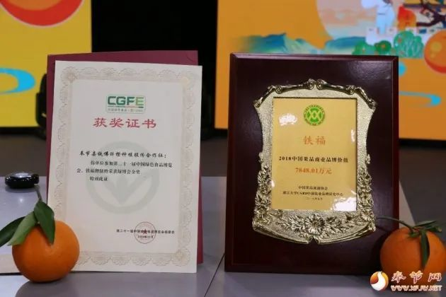

大城小事
2022
07-01
赞！垫江县入围种子基地“国家队”
近日 农业农村部发布 关于公布国家级制种 大县和 区域性良种繁育基地 认定结果的通知。重庆市共两个区县上榜 咱们垫江占据一席！ 点击播放 GIF 0.0M垫江 县被认定为国家级水稻制种大县 潼南区被认定为国家级油菜。
2022
07-01
看看你家附近的菜市场 会不会迎来改造升级？
4月11日 记者从万州区商务委获悉， 日前，万州正式启动城区菜市 场整治， 今年将对城区7个菜市场进行整治提升， 满足人民 日益增长的美好生活需要。区商务委相关负责人介绍，为深入推进全国文明城区创建，促进城市建 成区农贸市场、菜市场 （以下统称菜市场）提次城菜市场整治 坚持问题 导向、需求导向，一场一策， 对城市建成区菜市场按照 "新设新建、迁建 迁改、 改造提升、关闭利用、 农超融合、统一运营"七个一批总体思路分 类分批推进。
2022
07-01
唐小平：深化改革创新 加速产业集聚 扎实推进国际物流城"升级版"打造
4月10日，区委书记唐小平调研重庆国际物流枢纽园区建设工作。他强 调，要深入贯彻习近平总书记对重庆所作重要讲话和系列重要示批示 精神，全面落实党中央决策部署和市委工作要求,坚持，从全局谋划一 域、以一域服务全局，积极融入、主动服务国家战略，深化改革创新， 加速产业集聚，扎实推进国际物流城"升级版"打造，在建设内陆开放 高地中展现更大的当和作为。 区委副书记、区长肖庆华，区委副书记 李鹏，区领导陈英、户邑、钟文参加。
/
大

奉节脐橙康乐镇专场推介活动举行
发布时间：2020-06-30
橙花香飘数十里，金果挂树笑春风。4月8日晚，奉节脐橙康乐镇专场 推介活动在县融媒体中心演播大厅举行，活动通过直播的形式，向
查看更多
重庆两江新区："创"出开放型经济新活力
发布时间：2020-06-30
重庆两江新区："创"出开放型经济新活力 至今年4月1日，重庆自贸试验区已挂牌运行五周年。在这119.98平方公里的国家"试验田"里，两 江新区所辖的两江片区和果园港片区共97.17平方公里，占其总面积的八成。
查看更多
新加坡航空（重庆）保税航材分拨中心在渝成立
发布时间：2020-06-30
重庆海关关长谢斌与重庆市中新示范项目。
查看更多
适用浏览器：360、FireFox、Chrome、Opera、傲游、搜狗、世界之窗. 不支持Safari、IE8及以下浏览器。
来源：
站长素材